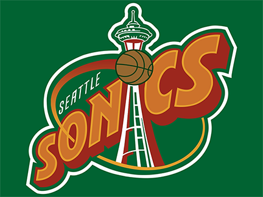
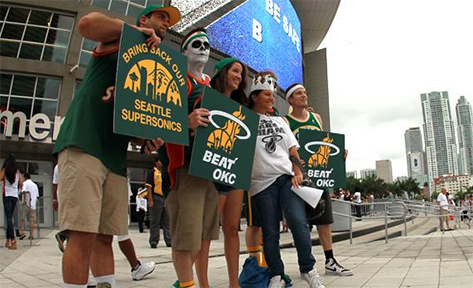
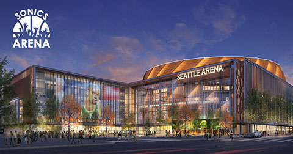

History
The SuperSonics played in the National Basketball Association (NBA)
as a member club of the league's Western Conference Pacific and Northwest divisions from 1967 until 2008.
After the 2007 and 2008 season ended, the team relocated to Oklahoma City, Oklahoma,
and now plays as the Oklahoma City Thunder.

Memorabilia
Supersonics fan base were extremely loyal during the teams tenure in Seattle. Year after year, Seattleites
braved rain, wind, and cold temps to cheer on their favorite players including several notable hall of famers.

Social and Economic Impact
Bringing the SuperSonics back to Seattle would provide additional jobs for Seattleites, supporting businesses,
transportion, and food industries. Initial projections predicted a 2,000 employee impact needed to work
SuperSonic games. Additionally, projections show an estimated $100,000,000 in annual revenue to the city of Seattle.
